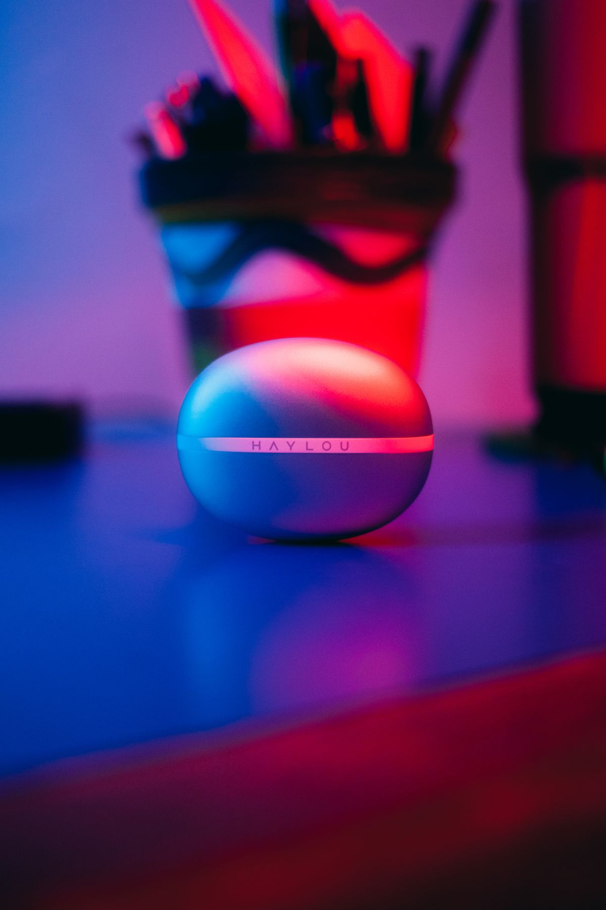
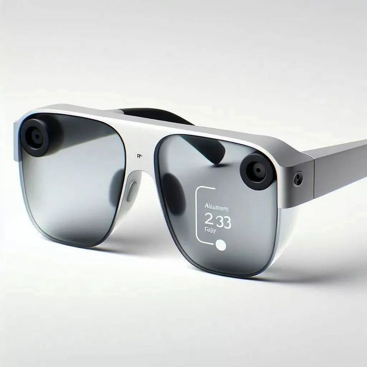

CSS Animations · Ambient & Feedback
Ambient backgrounds & feedback states.
Catalog sections J and K — 14 continuous ambient effects and
17 loading/reaction effects. Every ambient effect below loops forever and disables
entirely under prefers-reduced-motion rather than shortening to a
meaningless 1ms.
Trigger buttons below are demo glue, not part of the library — every effect itself is one attribute.

J — Ambient backgrounds
14 continuous, decorative effects, on:load by default — plus
beam-border, a related hover/border primitive worth knowing even though
it's catalogued separately from these 14. Loops run at full speed here; nothing waits
for scroll or a click.
Gradient & color fields — 2
Border treatments — 2


Texture & scanlines — 2
Grid drift — 2
Floating & orbiting shapes — 4
Light & atmosphere — 3
K — Feedback & status
17 loading indicators and event-driven reactions. Trigger buttons are demo glue, not part of the library.
Loading indicators — 6
Loaded. This paragraph replaced the skeleton.
Toast — 2
Error & attention — 2
Click reactions — 6
Gesture-simulated — 1